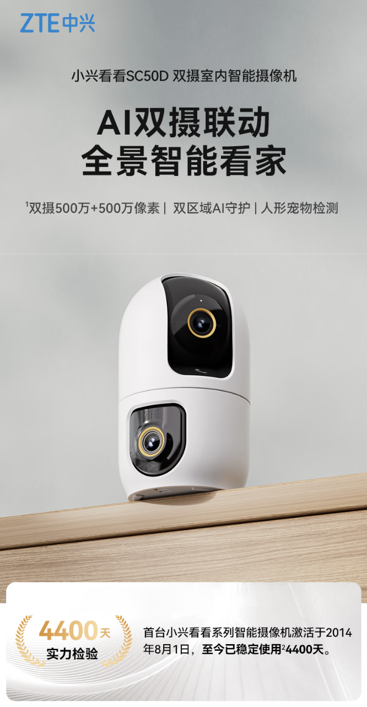
THE TECH EDIT
기술의 변화, 매일 한눈에.
카메라 · 스마트폰 · AI, 해외 테크 소식을 모아 전합니다.
최근 발행2026-10-10
새로 들어온 소식
LATEST STORIES최신 뉴스
전체 3,565개 기사
Xiaomi 미지아 그래핀 온풍기 Pro 출시: 2m 온풍 반경, 80° 광각 스윙, 399위안
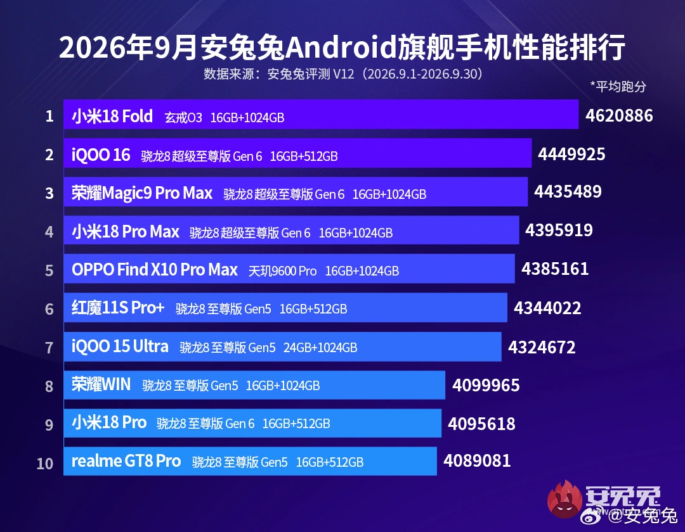
Xiaomi 18 폴더블 스마트폰, XRING O3 칩 탑재로 안투투 9월 안드로이드 플래그십 성능 순위 1위, 평균 벤치마크 점수 462만점 돌파
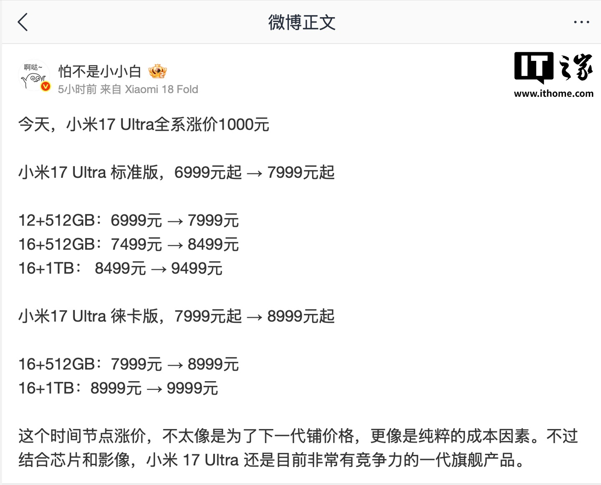
7,999위안부터, Xiaomi 17 Ultra 스마트폰 전 모델 1,000위안 인상
XGIMI MemoMind One AI 디스플레이 안경 사전 예약 시작: 칼 자이스 맞춤형 광학 렌즈, 하만 공동 튜닝

vivo Y600s Pro 스마트폰 출시: 10200mAh 블루 오션 배터리, Dimensity 7300e + 8GB RAM, 2699위안부터
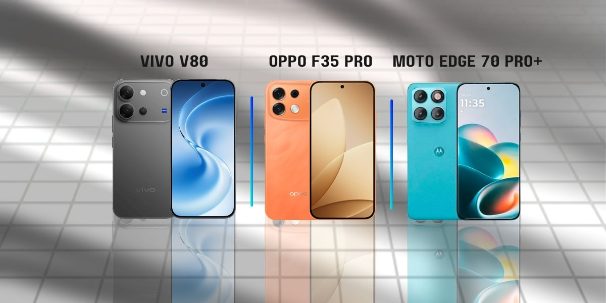
비보 V80 대 오포 F35 프로 5G 대 모토로라 엣지 70 프로+: 어떤 스마트폰이 더 나은 가치를 제공할까?
SK그룹 최태원 회장: 반도체 수요 빠르게 증가, 조건 허락하는 대로 조속히 공장 건설
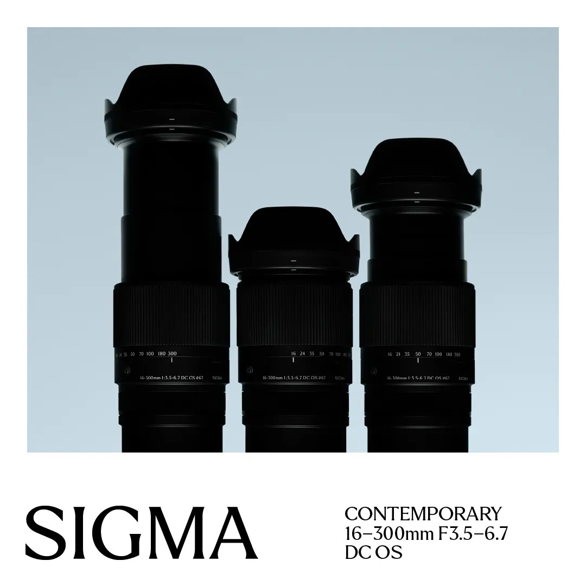
시그마 16-300mm F3.5-6.7 APS-C 카메라 렌즈, Nikon Z 마운트 버전 공식 발표
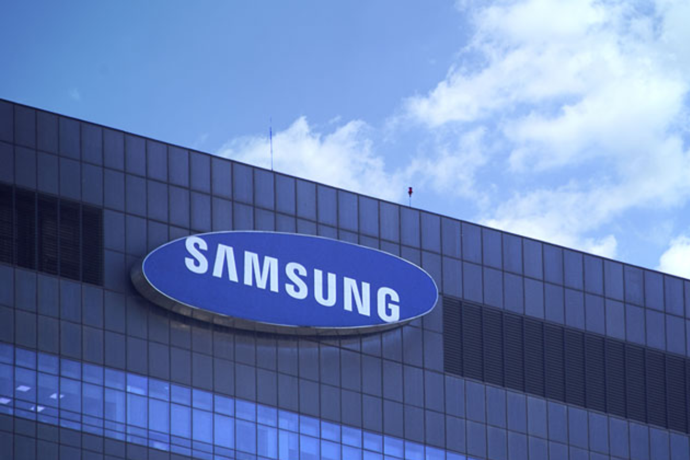
삼성, 스마트폰 사업 판매 호조에도 수익 없어… 생산량 최대 30% 감축 가능성

Samsung, 2026년 4분기 스마트폰 생산량 2,420만 대 예상, 23% 감소 전망
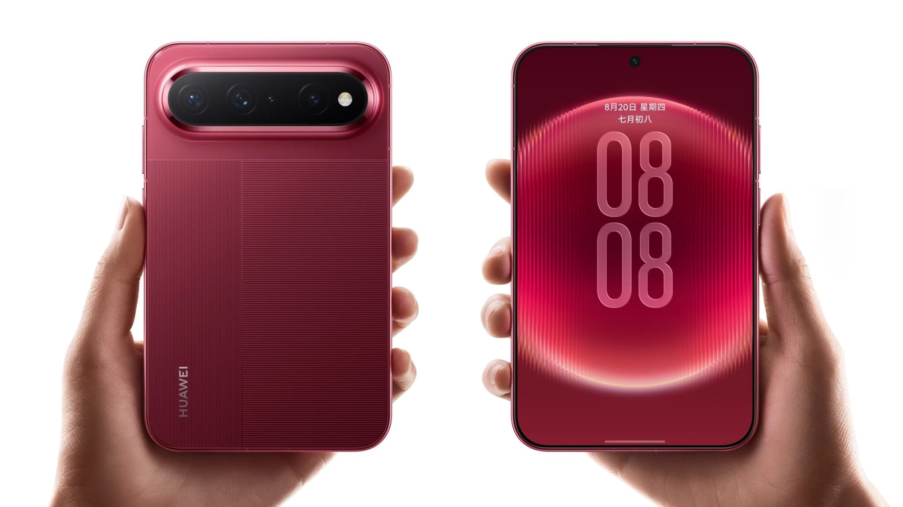
오포의 와이드스크린 스마트폰, 16:9 화면비 예상 및 화면 크기 추측
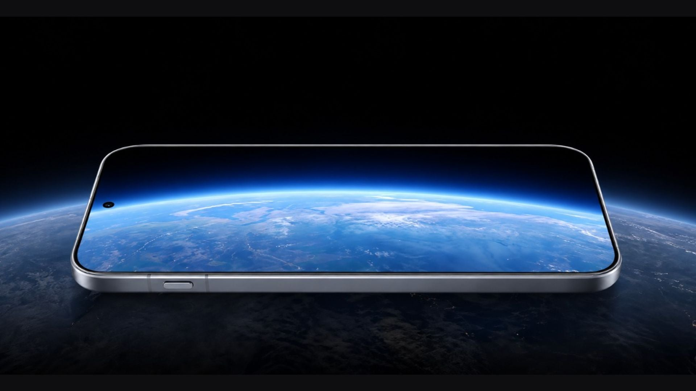
OnePlus 16, 185Hz BOE X4 디스플레이로 게이밍 스마트폰 화면 재정의할 수도

OnePlus 아이스 카드 미니 마그네틱 쿨러 출시: 스마트폰 직접 전원 공급, 무게 약 50g

OnePlus 16 스마트폰, 9000mAh 빙하 배터리 및 100W 유선 + 50W 무선 충전 지원 공식 발표
iPhone 스파이웨어 P7 DarkSword 노출: 15초마다 사진 등 사용자 데이터 외부 전송
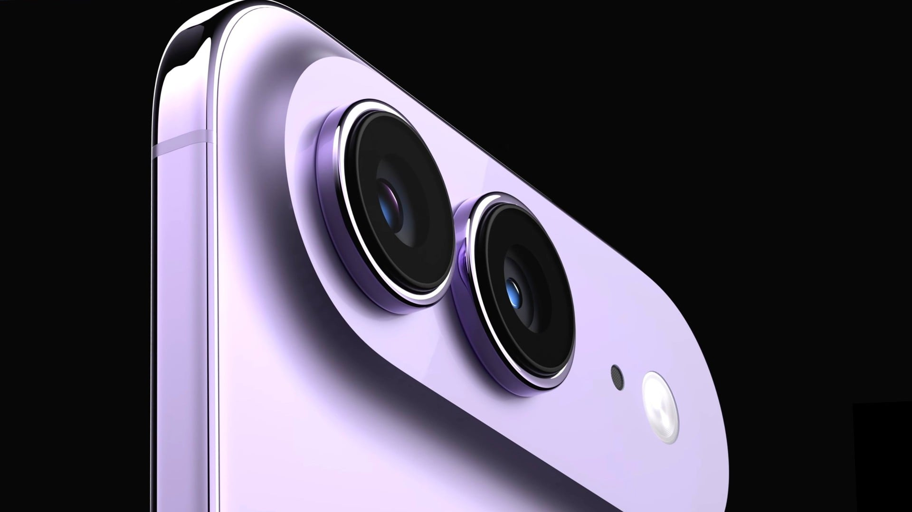
아이폰 에어 2, 더 얇아지고 배터리 용량 커진다
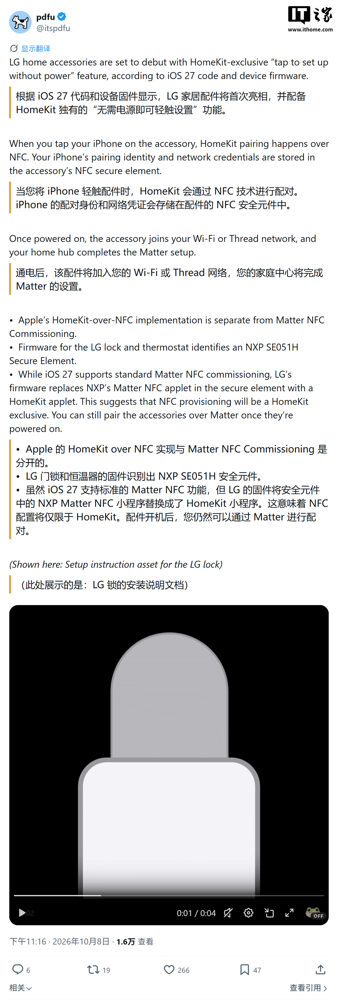
iPhone 18 Pro 등 기종, 터치 한 번으로 설정 완료: Apple과 LG의 스마트 홈 제품 협력으로 '전원 미인가 사전 페어링' 지원 예정
메모리 가격 상승으로 iPhone 18 Pro 시리즈 가격 인상, Apple 신제품 부품 주문량 삭감 소문
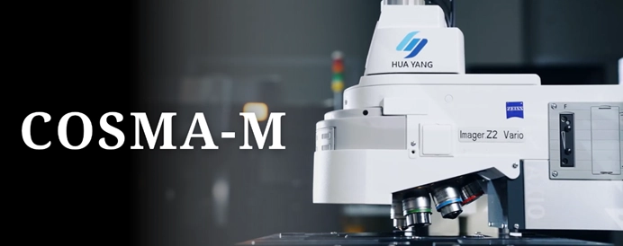
화양정기, 칼 자이스와 협력해 나노미터급 정밀도 반도체 측정 장비 COSMA-M 출시
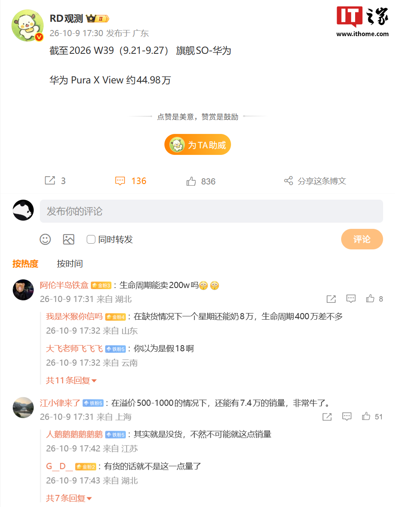
Huawei Pura X View 바 타입 스마트폰 판매량 40만 대 돌파, 여전히 품귀 현상 및 프리미엄 붙어
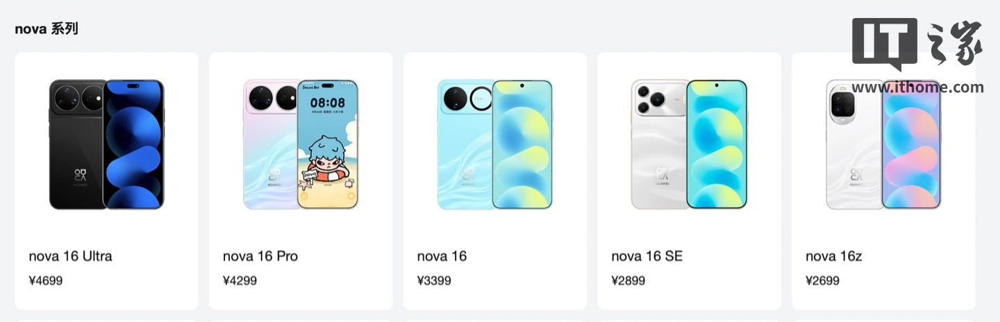
Huawei nova 16 시리즈 스마트폰 일부 버전 가격 인상: SE 200위안, 표준/Pro 400위안 인상
검색 결과가 없습니다
다른 검색어를 입력하거나 필터를 초기화해 보세요.